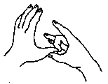

Os
oito Mudras
Notas:
1 - M.d. = mão direita M.e. = mão esquerda.
2 - O texto sublinhado indica que pode ser feito usando alternadamente o lado
direito (mão direita) e depois o lado esquerdo (mão esquerda).
3 - Tocar a área indicada, com a ponta dos dedos da mão, durante alguns minutos
ou até sentir uma pulsação rítmica.
1 - Expirando as cargas e os bloqueios.
|
|
Toque com o
polegar direito levemente no dedo médio da m.e. na face da palma.
|
2 - Inspirando a Abundância.
|
|
T oque com o polegar direito levemente no dedo médio da m.e. na face dorsal. Coloque os outros dedos da m.d. sobre o lado da palma do dedo médio esquerdo. |
3 - Acalmando-se e Revitalizando-se.
|
Toque com o polegar direito levemente nos dedos anular e mínimo da m.e. na face da palma. Coloque os outros dedos da m.d. sobre a face dorsal dos dedos anular e mínimo esquerdos. |
4 - Liberando o Cansaço diário.
|
Toque com o polegar direito levemente nos dedos indicador e médio da m.e. na face dorsal. Coloque os outros dedos da m.d. sobre o lado da palma dos dedos indicador e médio esquerdo. |
5 - Revitalização Total.
|  |
Faça um círculo com o dedo médio e o polegar da m.d. Coloque a ponta do polegar da m.e. na junção do círculo da m.d. de tal forma que a polpa do polegar da m.e. fique sobre a unha do dedo médio da m.d. |
6 - Respirando Livremente.
| Faça um círculo com o dedo anular tocando a palma do polegar da mão. |
7 - Expirando a sujeira o pó e fuligem.
| Toque a palma dos dedos médios direito e esquerdo, enquanto os outros dedos se entrelaçam. |
| Encoste as unhas dos dedos médios direito e esquerdo uma na outra. |